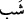
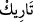

Ancak Allah Teâlâ onu Medyen’e attı; orada bir sır hazırlanmıştı. Şuayb, Allah’ın bir
peygamberiydi ve Medyen’e yerleşmişti. Takdir Mûsâ’yı Şuayb (a.s.)’ın hizmetine
sürükledi. Ne elde ettiyse onun hizmetinde ve sohbetinde kazandı. İbrahim Halilullah
(a.s.) bütün yolların kapalı olduğunu görünce (güneşin, ayın, yıldızların vs. Allah
olamayacağını kavrayınca), Allah’ın tek olduğunu anladı ve “Ben hanîf olarak,
yüzümü gökleri ve yeri yoktan yaratan Allah’a çevirdim. ” (el-En’âm, 6/79) diye
haykırdı.
Yol eri, açık olan ana yolda at koşturan değil; karanlık gecede dar yolda delilsiz
dostun yoluna gidendir. Nitekim bu husus, peygamberler ve Allah’a yolculuk yapan
muhâcir evliyânın çoğu için de geçerlidir.
Hâfız şöyle der:
Kapkaranlık bir gece, dalga korkusu ve korkunç bir girdap
Sâhilde rahat yolculuk edenler hâlimizi nerden bilecekler?
Fakir (Bursevî) der ki: Bu şiirde geçen “kapkaranlık bir gece (__WORD__
)” sözüyle
Allah’ın zâtının celâlini kasdediyor. Çünkü gece; zât âlemine ve karanlığı da celâlinin
gâlebesine işâret eder. “Dalga korkusu (__WORD__) ” sözüyle de Allah’ın kahr ve celâl
sıfatlarından korkmağa işâret edilir. “Böyle korkunç bir girdap (__WORD__) ”
ifâdesinde ise, helâk etme hususunda denizi bulandıran aşk imtihanlarına işâret vardır.
Bu mısrada anlatılanlar, hal sâhiplerinden işin başında ve ortasında olanların
vasıflarıdır. Çünkü onlar aşk denizine düşmeleri sebebiyle bâkâ sâhiline çıkıncaya
kadar sürekli korkunç belâlarla mübtelâ olurlar. “Sâhilde rahat rahat yolculuk edenler (__WORD__) sözüyle, büyük emânet sayılan aşkı taşıyamayanlar kasdediliyor. Onlar
beşeriyet arzında kalmış olan âbid ve zâhidlerdir. Onlar kara, beşeriyet ve hicâb ehli
oldukları için deniz, melekiyet ve müşâhede ehlinin ahvâli hakkında irfan sâhibi
değildirler. Çünkü zâhir ve bâtın arasında uzunca bir yol; kapı ile sadır (huzura giriş)
arasında çok büyük fark vardır; Mebde (başlangıç) ile menzil (konağa varış) arasında
uzun bir seyr vardır. Allah Teâlâ’dan aşkı ve hallerini tatmayı; aşkla ilgili lâfız ve
sözlerden aşkın mânâ ve hakîkatlerine vâsıl olmayı dileriz.
Aclûnî, I, 304.